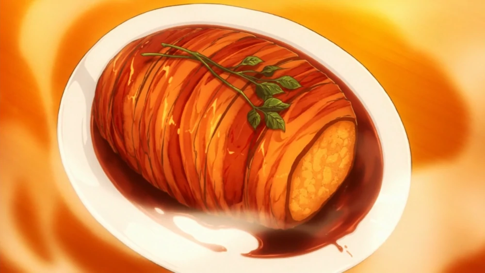

Roast Pork JK

Welcome to the jungle of happiness, surprise, sadness (hopefully not), and enjoyment as you go ahead and enjoy something new.
Ingredients
- -6 white potatoes
- -3 Eringi mushrooms
- -1 large white onion, or 2 medium white onions.
- -1 sprig of rosemary.
- -Butter. I suggest 2 tablespoons (30ml), but you could always used a bit more.
- -2 packs of thick-cut bacon.
- -1 cup, or 250ml of red wine. We used a Pinot Noir since its preferable for cooking.
- -1/4 cup, or 60ml of sake. Any sake that is labeled as “sweet” should do.
- -2 tbs, or 30ml of soy sauce.
- -1 spring of parsley or any garnish.